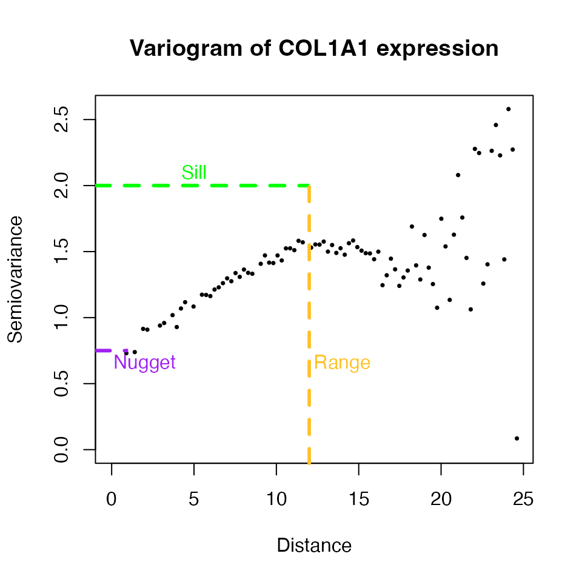
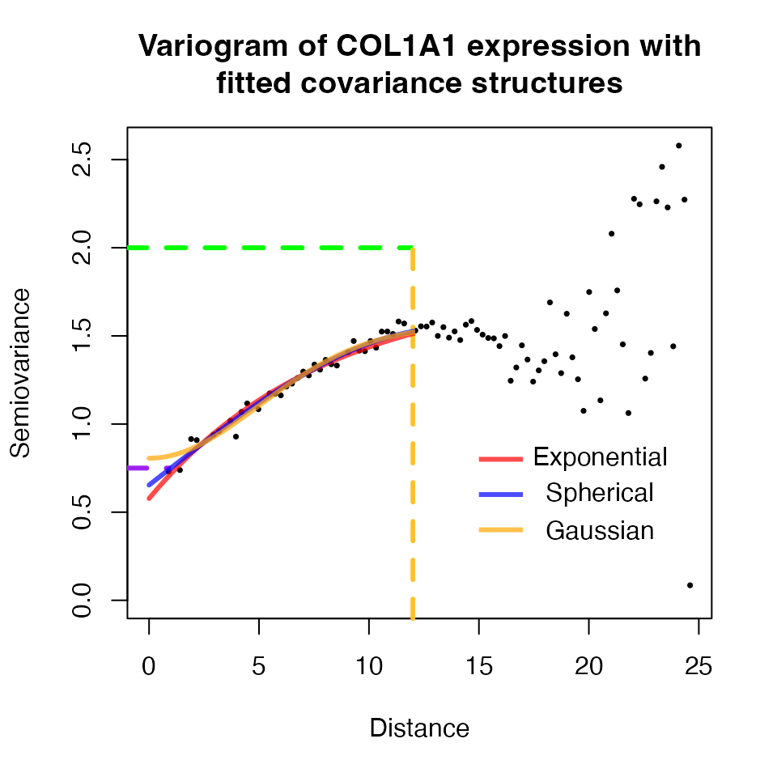
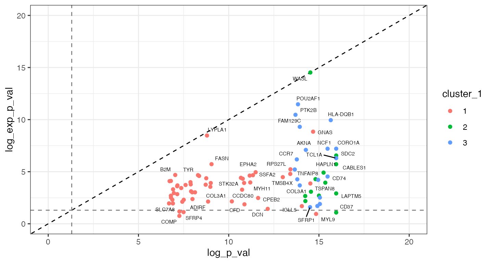

spatial_differential_expression.RmdDifferential gene expression testing has been a fundamental part in
studies using “bulk” RNAseq data, and continues to be critical in the
analysis of single-cell and spatial transcriptomics. The
STdiff function from the
spatialGE package provides
methods for traditional, non-spatial differential gene expression
analysis such as Wilcoxon’s rank test, T-test, and mixed models.
Spatial transcriptomics (ST) presents a new challenge for differential gene expression analysis. In ST, gene expression is measured at locations (spots or cells) that are separated by fixed or variable distance. Within each assayed tissue, cells or spots that are close are more likely to be transcriptomically similar compared to distant cells or spots. This correlation between (transcriptomic) similarity and spatial distance is known as spatial dependency. Neglecting the spatial dependency in ST may result in inflation of type I error and an excess of differentially expressed genes (false positives).
To visually illustrate the presence of spatial dependency in ST data, a variogram can be used. A variogram is a plot that shows how a variable (gene expression in this case), varies with respect to distance among the locations (spots or cells) where the variable was measured.
The spatial dependency is described quantitatively by means of the
spatial covariance among spots/cells. The estimation of spatial
covariance is computationally expensive, especially if the ST data that
contains thousands of spots/cells. For convenience, in this tutorial the
smaller ST data set generated by Thrane et al.
(2018) will be used. This data set includes lymph node biopsies
from four patients with stage III melanoma, with two tissue slices per
biopsy. This technology is a predecessor of the Visium assay, and
allowed RNA capture in up to 1,007 spots separated each other by 200μM.
The spots are 100μM in diameter, which corresponds to 5-40 cells
according to the authors. The data set is included in the
spatialGE repository, but users can also find the data in
the authors’
website.
The spatialGE package does not have built-in methods to
generate variogram plots, however an STlist object will be created to
normalize the ST data, which is necessary for variogram analysis. The
same STlist will be used later to conduct differential expression
analysis with STdiff.
The STlist function takes data in several formats. The
reader is encouraged to see the STlist reference (see here
to learn about the different options to read ST data in
spatialGE. In this guide, we provide the
STlist function with comma-delimited files containing gene
expression counts per spot and comma-delimited containing the spatial
coordinates per spot. The example files in this tutorial can be
downloaded from the GitHub
repository. They can also be accessed directly from R like so:
#data_files <- system.file("extdata/melanoma_thrane", package="spatialGE")
data_files <- '../inst/extdata/melanoma_thrane/'
count_files <- list.files(data_files, full.names=T, pattern='counts')
coord_files <- list.files(data_files, full.names=T, pattern='mapping')This melanoma ST data set also contains sample-level meta data. We will also provide this file to specify sample names:
clin_file <- list.files(data_files, full.names=T, pattern='clinical')Load the spatialGE package:
library('spatialGE')We can load the data into an STlist object with:
melanoma <- STlist(rnacounts=count_files, spotcoords=coord_files, samples=clin_file)
#> Found matrix data
#> Matching gene expression and coordinate data...
#> Converting counts to sparse matrices
#> Completed STlist!
#> Note: If you receive a warning indicating that an input file has a incomplete final line, you can ignore it. Alternatively, modify the input files with a text editor by adding an empty line at the end of the files.
The melanoma object is an STlist that contains the count
data, spot coordinates, and clinical meta data.
melanoma
#> Spatial Transcriptomics List (STlist).
#> 8 spatial array(s):
#> ST_mel1_rep1 (279 ROIs|spots|cells x 15666 genes)
#> ST_mel1_rep2 (293 ROIs|spots|cells x 16148 genes)
#> ST_mel2_rep1 (383 ROIs|spots|cells x 16831 genes)
#> ST_mel2_rep2 (380 ROIs|spots|cells x 16605 genes)
#> ST_mel3_rep1 (256 ROIs|spots|cells x 15653 genes)
#> ST_mel3_rep2 (294 ROIs|spots|cells x 15769 genes)
#> ST_mel4_rep1 (212 ROIs|spots|cells x 14408 genes)
#> ST_mel4_rep2 (248 ROIs|spots|cells x 15991 genes)
#>
#> 9 variables in sample-level data:
#> patient, slice, gender, BRAF_status, NRAS_status, CDKN2A_status, survival, survival_months, RINTo normalize the ST data, the transform_data is
used:
melanoma <- transform_data(melanoma)The expression of the gene COL1A1 will be used to illustrate spatial dependency in ST. The gene COL1A1 is one of the collagen genes, a key component of the extracellular matrix and the stroma compartment. The stroma is the region in a cancer tissue that surrounds and often supports the tumor cells. The variogram can show how its expression varies with respect to the distance between spots within the sample ST_mel1_rep1.
Load tidtverse for data manipulation:
Then, data frame is created with both gene COL1A1 gene expression and spatial coordinates from sample ST_mel1_rep1.
# Sample and gene to be used in example
samplename <- 'ST_mel1_rep1'
gene <- 'COL1A1'
# Prepare data with coordinate and expression data
df_vgm <- melanoma@spatial_meta[[samplename]] %>%
select(libname, xpos, ypos) %>%
left_join(., tibble(libname=colnames(melanoma@tr_counts[[samplename]]),
geneexpr=as.vector(melanoma@tr_counts[[samplename]][gene, ])), by='libname') %>%
column_to_rownames(var='libname')The data frame contains the spatial coordinates of each spot
(xpos, ypos) and transformed expression of
MLANA (geneexpr).
head(df_vgm)
#> xpos ypos geneexpr
#> x2x9 2 9 1.586376
#> x2x10 2 10 0.000000
#> x2x11 2 11 1.550980
#> x2x12 2 12 1.650936
#> x2x13 2 13 3.540984
#> x2x14 2 14 3.038826In a variogram, each point describes the variance in gene expression
(semiovariance) with respect to the distance between spots. If spatial
dependency is present trend should be observed wherein semiovariance
increases as the distance between spots increases. In other words,
variance between close spots is lower than variance between distant
spots. To calculate the variogram, the geoR package is
used:
#> variog: computing omnidirectional variogramNow, the variogram can be plotted:
plot(vgm, pch=16, cex=0.5, ylab='Semiovariance', xlab='Distance',
main=paste0('Variogram of ', gene, ' expression'))
text(c(2, 5, 14), c(0.65, 2.1, 0.65),
labels=c('Nugget','Sill', 'Range'),
col=c('purple', 'green', 'goldenrod1'))
clip(x1=-1, x2=12, y1=-1, y2=2.1)
abline(h=2, col='green', lwd=3, lty=2)
clip(x1=-1, x2=1, y1=-1, y2=2)
abline(h=0.75, col='purple', lwd=3, lty=2)
clip(x1=-1, x2=12.1, y1=-1, y2=2)
abline(v=12, col='goldenrod1', lwd=3, lty=2)
We can see that variance is higher at longer distances. Note, that this relationship is disrupted at longer spot-to-spot distances (> 15 in this case). This disruption occurs because as spot-to-spot distances increase, some spots may belong to distant tissue niches that hold similarity. Regardless, the positive relationship between COL1A1 expression variance and distance is clear a short to medium distances, first increasing and then forming a plateau. Since a relationship exists between COL1A1 expression variance and distance, spatial covariance models defined by the nugget, sill, and range parameters can be fitted to account for spatial dependency.
STdiff
?
To account for spatial dependency, the STdiff calculates
three parameters from the variogram that are necessary to describe the
relationship between gene expression variance and distance between spots
or cells. The three parameters are known as nugget,
sill, and range).
The spatial covariance can be modeled using different covariance structures. The covariance structure that best describes the relationship varies from gene to gene, and from sample to sample. Three popular spatial covariance structures are the exponential, spherical, and gaussian covariance structures, all of them defined in terms of the nugget, sill, and range parameters.
Using the variogram calculated previously, the different covariance structures can be fitted and visualized with geoR like so:
# Exponential covariance structure:
exp_model <- geoR::variofit(vgm, fix.nugget=F, cov.model='exponential',
ini.cov.pars=c(0.2, 11), nugget=0.7, # Sill, range, and nugget specified here
max.dist=15) # Maximum distance to which model will be fitted
#> variofit: covariance model used is exponential
#> variofit: weights used: npairs
#> variofit: minimisation function used: optim
sph_model <- geoR::variofit(vgm, fix.nugget=F, cov.model='spherical',
ini.cov.pars=c(0.2, 11), nugget=0.7,
max.dist=15)
#> variofit: covariance model used is spherical
#> variofit: weights used: npairs
#> variofit: minimisation function used: optim
gau_model <- geoR::variofit(vgm, fix.nugget=F, cov.model='gaussian',
ini.cov.pars=c(0.2, 11), nugget=0.7,
max.dist=15)
#> variofit: covariance model used is gaussian
#> variofit: weights used: npairs
#> variofit: minimisation function used: optim
plot(vgm, pch=16, cex=0.5, ylab='Semiovariance', xlab='Distance',
main=paste0('Variogram of ', gene, ' expression with\nfitted covariance structures'))
text(c(20.5, 20.5, 20.5), c(0.8, 0.6, 0.4), labels=c('Exponential','Spherical', 'Gaussian'))
clip(x1=15, x2=17, y1=-1, y2=2.1)
abline(h=0.8, col=alpha('red', 0.7), lwd=3)
abline(h=0.6, col=alpha('blue', 0.7), lwd=3)
abline(h=0.4, col=alpha('orange', 0.7), lwd=3)
clip(x1=-1, x2=12, y1=-1, y2=2.1)
abline(h=2, col='green', lwd=3, lty=2)
clip(x1=-1, x2=1, y1=-1, y2=2)
abline(h=0.75, col='purple', lwd=3, lty=2)
clip(x1=-1, x2=12.1, y1=-1, y2=2)
abline(v=12, col='goldenrod1', lwd=3, lty=2)
lines(exp_model, col=alpha('red', 0.7), lwd=3)
lines(sph_model, col=alpha('blue', 0.7), lwd=3)
lines(gau_model, col=alpha('orange', 0.7), lwd=3)
In the case of COL1A1 for sample ‘ST_mel1_rep1’, all models
(exponential, spherical, and gaussian) fit well the variogram. Due to
computational constraints, the geoR package is not used in
spatialGE to estimate the covariance structures. Rather,
the spaMM package has been used and only the exponential
covariance structure has been implemented. While this choice is not
optimal for all genes, accounting for the spatial dependency even if the
model fit is not optimal, is likely better than not accounting for the
spatial dependency at all.
STdiff
In addition to Wilcoxon’s rank test and T-test, the
STdiff function can also use non-spatial mixed
models to test for differentially expressed genes. In the
non-spatial mixed models the the expression \(y(s_i)\) of a gene in spot/cell \(i\) is described as:
\[ y(s_i) = μ + ε(s_i) \]
where \(μ\) is the average expression of the gene in the sample, and \(ε(s_i)\) is the random error at spot/cell \(i\).
To reduce the number of false positives in differential expression
analysis of ST data, the STdiff function features a novel
implementation of spatial mixed models with that expands the
non-spatial case to include spatial covariance structures. In the
spatial mixed models, the expression \(y(s_i)\) of a gene in spot/cell \(i\) is described as:
\[ Y(s_i) = μ + w(s_i) + ε(s_i) \]
where \(w(s_i)\) denotes the exponential spatial covariance of spot/cell \(i\).
In order to detect differentially expressed genes, groups of
spots/cells should be defined first. In the context of ST data, these
groups of spots/cells often represent tissue domains. The
spatialGE package includes a spatially-informed tissue
domain detection method called STclust.
STclust
The STclust function groups spots/cells into tissue
domains using hierarchical clustering on a wighted similarity matrix.
The similarity maxtrox is derived from Euclidean transcriptomics
distances “shrunk” by the spatial Euclidean distances. Please, refer to
the journal article describing the method for more details (Ospina et al. 2022). To detect tissue domains,
a spatial weight of 0.025 (w=0.025) will be used. The
number of domains will be automatically defined by applying
dynamicTreeClusters (ks='dtc').
melanoma <- STclust(melanoma,
ks='dtc',
ws=0.025)
#> STclust started.
#> STclust completed in 0.17 min.
#> Results of STclust domain detection can be plotted using
the STplot function:
cluster_p <- STplot(melanoma,
samples='ST_mel1_rep1',
ws=0.025,
deepSplit=F,
ptsize=2, color=c('#00BA38', '#619CFF', '#F8766D'))
print(cluster_p[[1]])With the domains identified, the STdiff function can be
used. The following command tests for differentially expressed genes on
the 1000 genes with the highest variation (as defined by
Seurat’s function FindVariableFeatures).
deg <- STdiff(melanoma,
samples='ST_mel1_rep1',
w=0.025, k='dtc', deepSplit=F,
topgenes=1000,
sp_topgenes=0.2) # Test the 20% of the top differtially expressed genes (based on adjusted p-value)
#> Testing STclust assignment (w=0.025, dtc deepSplit=False)...
#> Running non-spatial mixed models...
#>
#> Registered S3 methods overwritten by 'registry':
#> method from
#> print.registry_field proxy
#> print.registry_entry proxy
#> Completed non-spatial mixed models (3.59 min).
#> Running spatial tests...
#>
#> Completed spatial mixed models (6.61 min).
#> STdiff completed in 10.25 min.
#> The output of STdiff is a list, where each element is a
data frame containing the test results for each sample:
print(deg[['ST_mel1_rep1']])
#> # A tibble: 3,000 × 9
#> sample gene avg_l…¹ clust…² mm_p_val adj_p_…³ exp_p_…⁴ exp_a…⁵ comme…⁶
#> <chr> <chr> <dbl> <chr> <dbl> <dbl> <dbl> <dbl> <chr>
#> 1 ST_mel1_rep1 RP11… -0.523 1 4.02e-10 6.03e- 9 4.02e-10 1.19e-9 NA
#> 2 ST_mel1_rep1 PEG10 -0.554 1 6.03e-14 1.64e-12 4.22e-10 1.23e-9 NA
#> 3 ST_mel1_rep1 RNF44 -0.400 1 4.79e- 8 4.99e- 7 2.77e- 9 6.81e-9 NA
#> 4 ST_mel1_rep1 ZCCH… -0.349 1 1.14e- 9 1.54e- 8 7.43e- 9 1.72e-8 NA
#> 5 ST_mel1_rep1 SHIS… -0.584 1 1.50e-12 3.21e-11 7.69e- 9 1.76e-8 NA
#> 6 ST_mel1_rep1 MCOL… -0.453 1 2.91e-11 5.07e-10 1.23e- 8 2.70e-8 NA
#> 7 ST_mel1_rep1 TSPA… -0.853 1 1.20e-14 3.53e-13 1.37e- 8 2.98e-8 NA
#> 8 ST_mel1_rep1 PPIA -0.648 1 7.40e-10 1.06e- 8 1.49e- 8 3.21e-8 NA
#> 9 ST_mel1_rep1 COL1… -0.527 1 5.89e- 7 4.94e- 6 2.92e- 7 5.73e-7 NA
#> 10 ST_mel1_rep1 SFRP1 -0.747 1 1.09e- 9 1.47e- 8 6.39e- 7 1.15e-6 NA
#> # … with 2,990 more rows, and abbreviated variable names ¹avg_log2fc,
#> # ²cluster_1, ³adj_p_val, ⁴exp_p_val, ⁵exp_adj_p_val, ⁶commentsThe columns p_val and adj_p_val are
respectively the nominal and adjusted p-values resulting from the
differential expression tests using the non-spatial models. The
exp_p_val and exp_adj_p_val are the p-values
resulting from the spatial models.
We can look at the -log10(p-values) to compare each spatial model to the non-spatial model:
# First load ggrepel to add gene names to plot
library('ggrepel')
# Calculate -log10 p-values
log_pval <- deg[['ST_mel1_rep1']] %>%
select(gene, cluster_1, mm_p_val, exp_p_val) %>%
mutate(log_p_val= -log10(mm_p_val+1e-100)) %>% # Add a constant to avoid -log10(0)
mutate(log_exp_p_val= -log10(exp_p_val+1e-100))
# Create plot
p1 <- ggplot(log_pval, aes(x=log_p_val, y=log_exp_p_val)) +
geom_abline(intercept=0, slope=1, linetype="dashed") + # Diagonal line... All p-values over this line if equal
geom_hline(yintercept=-log10(0.05), linetype="dashed", color='gray50') + # Line p-value <0.05
geom_vline(xintercept=-log10(0.05), linetype="dashed", color='gray50') + # Line p-value <0.05
geom_point(aes(color=cluster_1)) +
xlim(0, 20) + ylim(0, 20) + # Restrict axes to ease visualization (very small p-values)
geom_text_repel(aes(label=gene), size=2, show.legend=F) +
theme_bw()
p1
When comparing the -log10(p-values) from the non-spatial and spatial models, it is possible to see that the p-values from the non-spatial model tended to provide smaller, more significant p-values (i.e., larger -log10(p-values), below the 1:1 dotted red line). Some genes such as DCN, MYL9, IGF2 are shown as differentially expressed by the non-spatial models, however, are not differentially expressed in the spatial models (p-values under the -log10(0.05) indicated with horizontal and vertical dashed lines). This pattern is suggestive of type I error inflation.
Testing spatial models with STdiff is both
computationally- and time-intensive. The analysis in this tutorial took
approximately 18 minutes in a OS machine with a 6-cores Intel Core i7
and 16GB memory. Should the user decide to disable spatial testing, the
user only needs to set sp_topgenes=0. When running
spatial tests with more genes, and samples assayed with more
densely sampled technologies (e.g., Visium, CosMx-SMI), the user should
consider running STdiff in a High-Performance Computing
environment (HPC, or “cluster”), setting the number of cores to use via
the cores parameter.
spatialGE support other differential
expression test types?
It has been shown above that accounting for spatial dependence
between spots/cells is important to control inflation of type-I error
(i.e., too many differentially expressed genes). Nonetheless, the
STdiff function also implements differential expression
analysis using tests commonly used in non-spatial single cell analysis.
Specifically, the argument test_type can be set to
“wilcoxon” or “t_test” to perform either Wilcoxon’s Rank tests or
T-tests respectively:
deg_wilcox <- STdiff(melanoma,
samples='ST_mel1_rep1',
w=0.025, k='dtc', deepSplit=F,
topgenes=1000,
test_type='wilcoxon')
#> Testing STclust assignment (w=0.025, dtc deepSplit=False)...
#> Running Wilcoxon's tests...
#> Completed Wilcoxon's tests (3.29 min).
#> STdiff completed in 3.29 min.
#> No spatial tests are executed when Wilcoxon’s Rank tests or T-tests are requested.
print(deg_wilcox[['ST_mel1_rep1']])
#> # A tibble: 3,000 × 6
#> sample gene avg_log2fc cluster_1 wilcox_p_val adj_p_val
#> <chr> <chr> <dbl> <chr> <dbl> <dbl>
#> 1 ST_mel1_rep1 PEG10 -0.554 1 4.40e-14 1.20e-12
#> 2 ST_mel1_rep1 COL1A1 1.22 1 1.86e-13 4.44e-12
#> 3 ST_mel1_rep1 MCOLN3 -0.453 1 5.12e-13 1.12e-11
#> 4 ST_mel1_rep1 TSPAN7 -0.853 1 3.57e-12 6.82e-11
#> 5 ST_mel1_rep1 SHISA2 -0.584 1 1.17e-11 2.03e-10
#> 6 ST_mel1_rep1 IGLL5 0.993 1 1.89e-11 3.05e-10
#> 7 ST_mel1_rep1 METRN -0.560 1 3.59e-11 5.46e-10
#> 8 ST_mel1_rep1 HMGA2 -0.569 1 6.31e-11 9.05e-10
#> 9 ST_mel1_rep1 XAGE1A -0.581 1 6.35e-11 9.07e-10
#> 10 ST_mel1_rep1 RP11-3P17.4 -0.523 1 8.94e-11 1.22e- 9
#> # … with 2,990 more rowsSTdiff results
The spatialGE package has a built-in function
(STdiff_volcano) to generate volcano plots. The function
takes STdiff outputs and generates a volcano plot for each
sample and cluster (or cluster pair if pairwise testing was
requested).
vp <- STdiff_volcano(deg)Now, the ggpubr package can be used to arrange all
plots:
ggpubr::ggarrange(plotlist=vp, ncol=3, common.legend=T)
sessionInfo()
#> R version 4.1.2 (2021-11-01)
#> Platform: x86_64-apple-darwin17.0 (64-bit)
#> Running under: macOS Big Sur 10.16
#>
#> Matrix products: default
#> BLAS: /Library/Frameworks/R.framework/Versions/4.1/Resources/lib/libRblas.0.dylib
#> LAPACK: /Library/Frameworks/R.framework/Versions/4.1/Resources/lib/libRlapack.dylib
#>
#> locale:
#> [1] en_US.UTF-8/en_US.UTF-8/en_US.UTF-8/C/en_US.UTF-8/en_US.UTF-8
#>
#> attached base packages:
#> [1] stats graphics grDevices utils datasets methods base
#>
#> other attached packages:
#> [1] ggrepel_0.9.1 forcats_0.5.1 stringr_1.5.0 dplyr_1.1.0
#> [5] purrr_1.0.1 readr_2.1.2 tidyr_1.3.0 tibble_3.2.1
#> [9] ggplot2_3.3.5 tidyverse_1.3.1 spatialGE_1.2.0
#>
#> loaded via a namespace (and not attached):
#> [1] utf8_1.2.2 reticulate_1.24 tidyselect_1.2.0
#> [4] htmlwidgets_1.5.4 grid_4.1.2 Rtsne_0.15
#> [7] ggpolypath_0.1.0 munsell_0.5.0 codetools_0.2-18
#> [10] ragg_1.2.5 ica_1.0-2 future_1.23.0
#> [13] miniUI_0.1.1.1 withr_2.5.0 colorspace_2.0-2
#> [16] highr_0.9 knitr_1.37 rstudioapi_0.13
#> [19] Seurat_4.1.0 ROCR_1.0-11 ggsignif_0.6.3
#> [22] tensor_1.5 listenv_0.8.0 labeling_0.4.2
#> [25] slam_0.1-50 splancs_2.01-42 polyclip_1.10-0
#> [28] bit64_4.0.5 farver_2.1.0 rprojroot_2.0.2
#> [31] parallelly_1.30.0 vctrs_0.6.2 generics_0.1.2
#> [34] xfun_0.31 R6_2.5.1 khroma_1.8.0
#> [37] fields_14.1 spatstat.utils_3.0-1 cachem_1.0.6
#> [40] assertthat_0.2.1 promises_1.2.0.1 scales_1.2.0
#> [43] vroom_1.5.7 gtable_0.3.0 globals_0.14.0
#> [46] goftest_1.2-3 spam_2.9-1 rlang_1.1.1
#> [49] systemfonts_1.0.4 splines_4.1.2 rstatix_0.7.0
#> [52] lazyeval_0.2.2 spatstat.geom_3.0-6 broom_0.7.12
#> [55] yaml_2.2.2 reshape2_1.4.4 abind_1.4-5
#> [58] modelr_0.1.8 backports_1.4.1 httpuv_1.6.5
#> [61] tools_4.1.2 tcltk_4.1.2 ellipsis_0.3.2
#> [64] spatstat.core_2.3-2 jquerylib_0.1.4 geoR_1.9-2
#> [67] RColorBrewer_1.1-2 proxy_0.4-26 dynamicTreeCut_1.63-1
#> [70] wordspace_0.2-6 ggridges_0.5.3 Rcpp_1.0.10
#> [73] plyr_1.8.6 spaMM_4.2.1 ggpubr_0.4.0
#> [76] rpart_4.1-15 deldir_1.0-6 pbapply_1.5-0
#> [79] viridis_0.6.2 cowplot_1.1.1 ROI_1.0-0
#> [82] zoo_1.8-9 SeuratObject_4.0.4 haven_2.4.3
#> [85] cluster_2.1.2 fs_1.5.2 magrittr_2.0.2
#> [88] data.table_1.14.2 scattermore_0.7 lmtest_0.9-39
#> [91] reprex_2.0.1 RANN_2.6.1 fitdistrplus_1.1-6
#> [94] matrixStats_0.61.0 hms_1.1.1 patchwork_1.1.1
#> [97] mime_0.12 evaluate_0.14 xtable_1.8-4
#> [100] sparsesvd_0.2 readxl_1.3.1 gridExtra_2.3
#> [103] compiler_4.1.2 maps_3.4.0 KernSmooth_2.23-20
#> [106] crayon_1.4.2 minqa_1.2.4 htmltools_0.5.2
#> [109] mgcv_1.8-38 later_1.3.0 tzdb_0.3.0
#> [112] lubridate_1.8.0 DBI_1.1.2 dbplyr_2.1.1
#> [115] MASS_7.3-54 boot_1.3-28 car_3.0-12
#> [118] Matrix_1.4-1 cli_3.6.0 parallel_4.1.2
#> [121] dotCall64_1.0-1 igraph_1.2.11 pkgconfig_2.0.3
#> [124] pkgdown_2.0.7 registry_0.5-1 numDeriv_2016.8-1.1
#> [127] sp_1.4-6 plotly_4.10.0 spatstat.sparse_3.0-0
#> [130] xml2_1.3.3 bslib_0.3.1 iotools_0.3-2
#> [133] rvest_1.0.2 digest_0.6.29 sctransform_0.3.3
#> [136] RcppAnnoy_0.0.19 spatstat.data_3.0-0 rmarkdown_2.14
#> [139] cellranger_1.1.0 leiden_0.3.9 uwot_0.1.11
#> [142] shiny_1.7.1 nloptr_2.0.0 lifecycle_1.0.3
#> [145] nlme_3.1-153 jsonlite_1.7.3 carData_3.0-5
#> [148] desc_1.4.2 viridisLite_0.4.0 fansi_1.0.2
#> [151] pillar_1.8.1 lattice_0.20-45 fastmap_1.1.0
#> [154] httr_1.4.2 survival_3.4-0 glue_1.6.2
#> [157] png_0.1-7 bit_4.0.4 stringi_1.7.6
#> [160] sass_0.4.0 textshaping_0.3.6 memoise_2.0.1
#> [163] irlba_2.3.5 future.apply_1.8.1